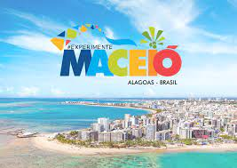
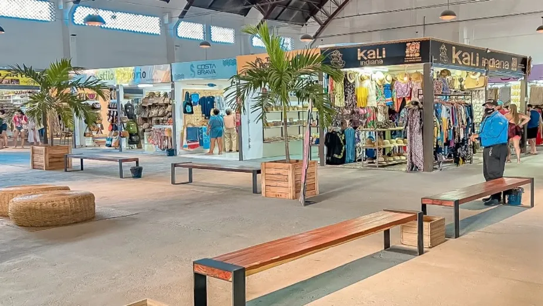

DESTINO: MACEIÓ

Imagine um lugar onde o azul do mar se mistura com o verde das águas cristalinas, onde o sol brilha praticamente o ano inteiro e o calor humano é tão acolhedor quanto a brisa do litoral. Esse lugar existe — e se chama Maceió, a deslumbrante capital de Alagoas. Com praias de tirar o fôlego, como Pajuçara, Ponta Verde e Praia do Francês, Maceió é o destino perfeito para quem busca descanso, aventura e paisagens inesquecíveis. As famosas piscinas naturais, acessíveis por jangadas, revelam um espetáculo subaquático de peixes coloridos e corais em águas mornas e translúcidas. Mas Maceió vai muito além da beleza natural. A cidade pulsa cultura, com seu artesanato rico em rendas e bordados, sua culinária à base de frutos do mar e sabores típicos como a peixada, a tapioca e o sururu. Cada canto da cidade conta uma história — do bairro histórico de Jaraguá às feiras de artesanato que encantam visitantes de todas as partes. E para quem deseja se aventurar além, Maceió é a porta de entrada para o litoral alagoano, com acesso fácil a joias como Maragogi e suas galés, e São Miguel dos Milagres, um verdadeiro santuário ecológico. Venha viver Maceió. Um destino onde o tempo parece desacelerar, e cada dia é um convite ao bem-estar, à alegria e à conexão com a natureza. Quem conhece, não esquece. E quem volta, sempre quer ficar mais um pouco.
ATRAÇÕES TURÍSTICAS
~Piscinas naturais de Pajuçara~

As piscinas naturais de Pajuçara, em Maceió, Alagoas, são um passeio imperdível. São formadas durante a maré baixa e são verdadeiros aquários naturais, com peixes coloridos e corais.
O que você vai ver Águas calmas e transparentes, Diversidade de vida marinha, Cores vibrantes, Bares flutuantes. Como aproveitar Passeio de jangada, Passeio de caiaque, Mergulho, Snorkel, Apreciar o pôr-do-sol.
~Praia do Gunga~

A Praia do Gunga é uma praia famosa em Alagoas, a cerca de 40 km ao sul de Maceió. É conhecida por suas águas cristalinas, coqueirais, e piscinas naturais
~Mercado 31~

Imagine um espaço onde o colorido das peças artesanais se mistura ao aroma irresistível de pratos típicos, enquanto o som de músicas tradicionais embala os visitantes, aqui em Maceió, no bairro histórico de Jaraguá está o Mercado das Artes 31, o maior centro de artesanato e cultura popular de Alagoas, um espaço agradável para turistas e locais se encontrarem com a família e amigos criarem memórias e ainda levarem as melhores lembranças.
Hoteis sugeridos
| Hotel | Localização | Diária |
|---|---|---|
| Best Western Premier Maceió | Avenida Dr. Antônio Gouveia, 925 – Pajuçara, Maceió | A partir de R$ 744 |
| Hotel Brisa Suítes Pajuçara | Avenida Dr. Antônio Gouveia, 133 – Pajuçara, Maceió | A partir de R$ 571,43 |
| Pajuçara Hotel Express | Rua Jangadeiros Alagoanos, 1231 – Pajuçara, Maceió | A partir de R$ 286,00 |